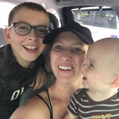

ABOUT ME
Hello there! My name is Kimberly. I'm a college student, wife, mother, and lover of all things creative!
I'm currently a student at Southwestern College where I'm pursuing a bachelor's degree in Computer Programming Technology. I have just 6 courses remaining and am expected to graduate December 2021! I was led to the computer programming field after spending nearly 10 years working in Technical and Adult Education. During that time I became familiar with various database systems and found myself wanting to learn more and more about how they work.
I've been married for nearly 13 years to my wonderful husband, James. We have two amazing children, 9-year old Aiden and 1-year old Jonah. They are smart, funny, and definitely keep me on my toes. My family and I reside at Fort Riley, Kansas, where my husband (who is active-duty Army) is stationed. The pace here is quite a bit slower than Columbus, Ohio, where we were stationed previously. But I have grown to enjoy the view of the hills and the sunsets here are more beautiful than I would have ever imagined.
Hobbies

My family and I spend a lot of time together. We enjoy activities such as traveling, checking out new restaurants, going on walks, and fishing. When I have spare time of my own (however rare that may be) I have plenty of hobbies to keep myself busy. When I'm looking to unwind a bit, you can find me on the couch getting lost in a good TV series or movie. Otherwise, I am particularly fond of hobbies that allow me to be creative, like baking or arts and crafts. My favorite items to bake are cookies, brownies, and breads. As for arts and crafts, I've dabbled in the following: drawing, painting, crochet, sewing, string art, and my newest obsession, jewelry making.
Check out my other pages for an overview of the materials and tools I use, step-by-step lessons, or photos of my work!
Links
Follow the links below to find your inspiration!